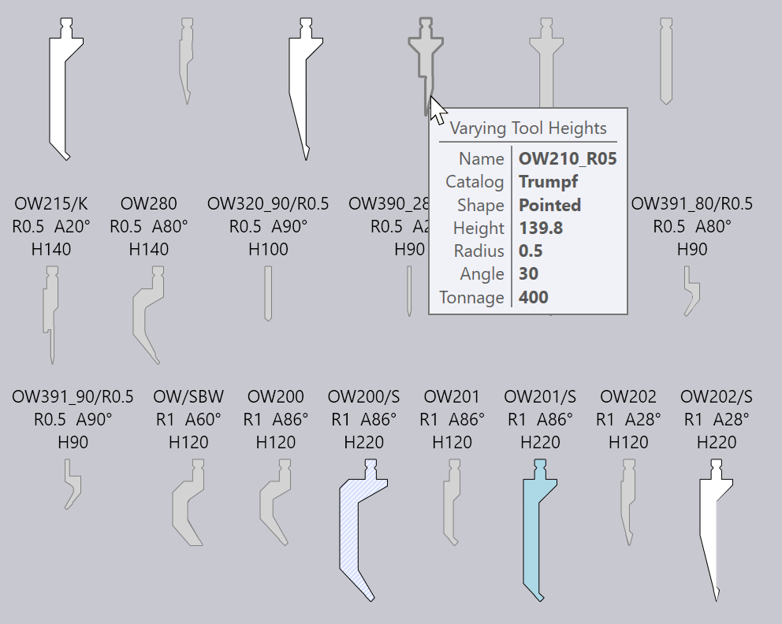
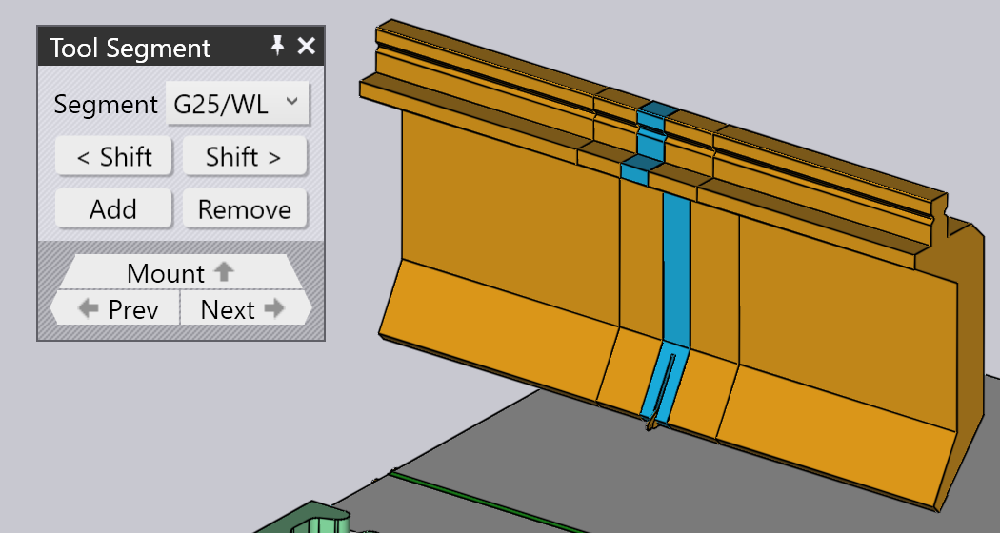
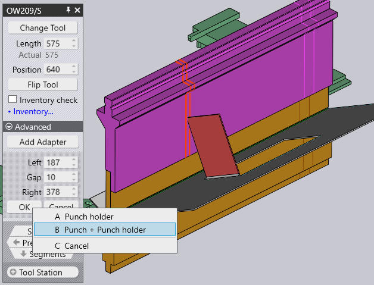

Edit pemasangan alat
Saat Anda mengklik pemasangan alat, panel Pemasangan Penekukan akan ditampilkan, dan dapat digunakan untuk mengedit berbagai pengaturan pemasangan penekukan, serta untuk melakukan beberapa aktivitas.
Panel Pemasangan Penekukan

Panel Pemasangan Penekukan terlihat seperti gambar di sampingnya. Pengaturan dan aktivitas yang tersedia akan berbeda-beda, tergantung pada apakah Anda mengklik punch, die, atau pemasangan adapter. Selain itu, beberapa pengaturan mungkin tersedia atau tidak tergantung pada kemampuan mesin.
-
Klik tombol Ubah jenis alat untuk mengganti alat yang digunakan untuk pemasangan yang dipilih dengan alat yang berbeda. (Lihat bagian di bawah ini untuk detail lebih lanjut tentang selektor alat yang digunakan untuk memilih alat pengganti).
-
Masukan Panjang digunakan untuk menyesuaikan panjang stasiun. Ketika Anda memasukkan nilai baru di sini, TecZone Bend akan menyusun stasiun kembali menggunakan kumpulan segmen yang sesuai untuk mencoba mencocokkan panjang yang diminta sedekat mungkin. Anda dapat memeriksa secara visual segmen yang digunakan dengan melihat garis batas segmen yang ditampilkan pada pemasangan penekukan.
-
Masukan Posisi digunakan untuk mengatur posisi tepi kiri pemasangan, sepanjang meja atau batang penekan mesin. Posisi juga dapat disesuaikan dengan menyeret pemasangan ke kiri atau kanan. (Lihat bagian di bawah ini tentang menyeret pemasangan).
-
Selektor Horn (hanya ditampilkan untuk pemasangan punch) dapat digunakan untuk memaksa TecZone Bend menggunakan kiri dan/atau kanan ear[1] bagian-bagian dalam komposisi).
-
Putar alat digunakan untuk membalik alat (dari depan ke belakang). Ini ditampilkan saat Anda mengedit pemasangan yang menggunakan alat asimetris (seperti alat offset, misalnya). Aktivitas membalik cukup cerdas untuk mengetahui apakah penahan dan alat tambahan perlu dibalik untuk menjaga konsistensi. Misalnya, pada gambar di bawah ini, membalik punch OW_Z4 (digunakan untuk penekukan Z) juga membalik die, penahan, dan bahkan komponen untuk menjaga konsistensi proses:

-
Tambahkan adapter digunakan untuk menambahkan pemanjang untuk menambah tinggi punch atau die. Saat Anda menambahkan adapter, adapter tersebut akan terpilih dan panel untuk adapter tersebut akan ditampilkan (hal ini memungkinkan Anda untuk mengganti adapter yang sedang digunakan atau mengeluarkannya).

-
Tambahkan celah digunakan untuk menambahkan celah ke dalam pemasangan alat agar sisi tekukan dapat melewatinya tanpa benturan (lihat bagian di bawah ini tentang Menambahkan Celah untuk detail lebih lanjut).
-
Tinggi alat besar digunakan untuk mengganti alat yang dipilih dengan alat lain yang lebih tinggi dari keluarga yang sama.
-
Klik Jauhkan untuk mengeluarkan pemasangan alat. Akan muncul kondisi kegagalan punch hilang atau die hilang yang ditampilkan pada navigator penekukan untuk penekukan yang menggunakan stasiun ini, dan hal ini dapat diperbaiki dengan menggunakan Tambahkan pada baris perintah di sebelah kiri untuk menambahkan pemasangan baru.
-
Selektor Alat sensor digunakan untuk berpindah-pindah antara pasangan disk sensor sudut ACB yang berbeda yang dapat digunakan untuk komponen ini. Pemilihan tergantung pada ketebalan lembaran, dan punch yang digunakan.
-
Jika kotak centang Pemeriksaan item target dipilih, segmen yang digunakan akan diperiksa terhadap inventaris bagian yang tersedia (yang dapat diedit dengan mengklik tautan Pengelolaan alat…). Jika segmen yang tidak ada dalam inventaris digunakan, simbol trefoil khusus akan digambar pada segmen tersebut, seperti yang dapat Anda lihat pada gambar di bawah ini untuk potongan 40 mm dan 45 mm di dekat bagian tengah punch di bawah ini:

Saat Anda mengedit pemasangan alat menggunakan salah satu pengaturan dan aktivitas ini, TecZone Bend segera memvalidasi status semua proses tekuk, melakukan berbagai pemeriksaan seperti benturan, kegunaan alat, dll. Status navigator penekukan diperbarui dengan segera dan dalam waktu nyata, sehingga sangat mudah untuk bereksperimen dengan berbagai pengaturan dengan umpan balik yang cepat dan akurat.
Jendela Ganti Alat
Saat Anda mengklik tombol Ubah jenis alat, jendela Ganti Alat akan ditampilkan:
Jendela ini menampilkan semua alat pengganti yang tersedia.
-
Gunakan hierarki di sebelah kiri untuk mempersempit pilihan - misalnya, Anda dapat memilih untuk hanya menampilkan alat Offset, agar pemilihan lebih mudah.
-
Gunakan selektor Urutkan di bagian atas untuk mengurutkan alat berdasarkan nama, tinggi, radius, atau kriteria pengurutan lainnya (kumpulan kriteria pengurutan yang tepat tergantung pada apakah Anda mengganti punch, die, atau adapter).
-
Anda dapat mengetikkan nama alat (atau nama singkat) ke dalam kotak Pencarian untuk mempersempit daftar dengan cepat. Mengetik sebagian nama alat juga bisa - misalnya, menggunakan OW200 akan cocok dengan alat OW200, OW200/S, dan OW200/K.
-
Gunakan slider Skala untuk menyesuaikan ukuran gambar alat. Alat yang saat ini digunakan memiliki isian berwarna biru dan garis luar tebal. Tanda silang biru muda menunjukkan alat lain yang digunakan dalam komponen ini.
-
Matikan kotak centang Filter untuk melihat semua alat tanpa batasan (terlepas dari apakah alat tersebut cocok atau tidak). Dalam tampilan ini, alat yang tidak cocok akan berwarna abu-abu, dan mengarahkan mouse ke salah satu alat tersebut akan menunjukkan alasan mengapa alat tersebut tidak tersedia untuk dipilih:

Saat Anda menggerakkan mouse di atas gambar alat, TecZone Bend segera menghitung ulang pemasangan alat yang dipilih menggunakan alat yang baru dipilih, dan Anda dapat melihat dalam waktu nyata apakah alat yang Anda pertimbangkan akan menyebabkan masalah benturan atau tidak (penekukan yang sesuai dalam navigator penekukan akan langsung menyala merah jika terjadi benturan). Pratinjau dalam waktu nyata ini memudahkan Anda untuk bereksperimen dengan berbagai pilihan alat hingga Anda menemukan yang sesuai.
Jika Anda mengklik salah satu alat, pilihan telah dibuat dan alat baru akan diterapkan ke komponen tersebut. Jika Anda menekan Esc, pilihan pratinjau yang Anda buat akan dikembalikan dan alat asli tidak akan berubah.
Navigasi dan pemilihan
Panel yang dipasang pada penekukan menampilkan berbagai tombol di subpanel navigasi dan pemilihan.
-
Gunakan tombol navigasi Penjepitan untuk naik ke pengeditan seluruh pengaturan penekukan. Lihat halaman editor pengaturan untuk detail lebih lanjut tentang hal ini.
-
Gunakan tombol Kembali dan Lanjut untuk berpindah-pindah mengedit berbagai pemasangan alat dalam pengaturan ini.
-
Gunakan tombol navigasi Pembagian untuk turun ke level berikutnya dan edit segmen-segmen individu yang membentuk pemasangan ini. Bagian di bawah ini tentang mengedit segmen pemasangan alat memberikan informasi lebih lanjut tentang hal ini.
-
Gunakan selektor Stasiun alat untuk memilih semua pemasangan alat yang membentuk stasiun ini. Ini akan memilih semua punch, die, dan penahan yang sejajar dengan dudukan yang dipilih, sehingga semuanya dapat diedit atau dipindahkan bersama-sama.
-
Gunakan selektor Alat yang sama untuk memilih pemasangan alat lain yang menggunakan alat yang sama. Hal ini sering berguna sebelum menggunakan aktivitas penggantian alat; memilih semua stasiun menggunakan alat yang ditentukan akan memperluas pemilihan alat pengganti yang tersedia.[2]
Mengedit beberapa pemasangan

Jika Anda memilih beberapa pemasangan menggunakan Shift+Klik pada semua pemasangan tersebut, Anda dapat mengeditnya secara bersamaan. Hanya pengaturan dan aktivitas yang umum untuk semua pemasangan yang dapat diedit.
Bidang seperti Panjang atau Posisi hanya ditampilkan untuk diedit jika nilainya sama untuk semua pemasangan.
Jika Anda memiliki beberapa stasiun, akan berguna untuk memilih semua punch atau semua die sebelum melakukan aktivitas Ganti alat. Dalam hal ini, pilihan alat pengganti yang tersedia lebih banyak (karena tidak ada bahaya benturan antara punch dan die yang memiliki tinggi berbeda).
Menyeret pemasangan alat tekuk

Masukan Posisi dapat digunakan untuk mengatur posisi yang tepat untuk pemasangan. Terkadang, lebih mudah untuk hanya menyeret pemasangan penekukan ke posisi baru. Untuk melakukan ini:
-
Klik pada pemasangan penekukan untuk memilihnya (pilih beberapa pemasangan menggunakan Shift+Klik)
-
Klik dan mulai seret ke kiri/kanan untuk memindahkan pemasangan yang dipilih.
Seperti yang ditunjukkan pada gambar di atas, saat Anda mengarahkan mouse ke atas pemasangan yang dipilih, tanda panah akan ditampilkan, menandakan bahwa Anda dapat menyeret pemasangan yang dipilih. Saat Anda menyeret pemasangan, elemen tampilan penempelan memungkinkan Anda dengan mudah menyelaraskan pemasangan dengan pemasangan lain yang sudah ada.
Jika Anda mengambil sebuah pemasangan di dekat tepi kirinya, tepi kiri semua pemasangan akan digunakan untuk penempelan. Jika Anda mengambil pemasangan dari bagian tengah, garis tengah akan digunakan sebagai acuan untuk penempelan, dan seterusnya.
Operasi lanjutan
Berikut adalah beberapa aktivitas lanjutan dengan panel editor Pemasangan Penekukan.
Mengedit segmen pemasangan alat
Mengklik tombol navigasi Segmen saat pemasangan alat penekukan sedang diedit akan membuka panel Segmen Alat, yang terlihat seperti gambar di samping. 
-
Selektor Alat digunakan untuk mengganti segmen alat yang dipilih dengan bagian yang lebih panjang atau lebih pendek, atau jenis bagian yang berbeda.
-
Tombol < Geser dan Geser > digunakan untuk memindahkan segmen yang dipilih ke kiri atau kanan dalam komposisi. Ini tidak mengubah panjang keseluruhan komposisi, tetapi berguna untuk memindahkan bagian sensor stopper ke kiri atau ke kanan untuk menghindari bukaan, misalnya.
-
Tombol Tambahkan dan Jauhkan digunakan untuk menambahkan segmen baru ke dalam komposisi, atau untuk menghapus segmen yang dipilih.
-
Tombol navigasi Kembali dan Lanjut digunakan untuk berpindah-pindah antara pengeditan segmen yang berbeda dalam pemasangan penekukan. Seperti yang ditunjukkan pada gambar di atas, segmen alat yang sedang diedit disorot dengan warna biru.
-
Tombol navigasi Pasang digunakan untuk naik satu tingkat, dan mengedit seluruh pemasangan penekukan, bukan segmen individual.
Menambahkan celah pada pemasangan
Terkadang berguna untuk menambahkan celah sempit pada pemasangan alat, biasanya untuk memungkinkan sisi tekukan melewatinya tanpa benturan. Untuk melakukan ini, klik pada tombol Tambahkan celah (yang muncul jika pemasangan alat cukup panjang). Sebuah area kecil akan terbuka di panel, dengan serangkaian masukan yang saling terhubung untuk mengatur margin kiri, margin kanan, dan celah aktual. Karena jumlah ketiga bagian ini harus sama dengan panjang pemasangan alat, mengedit dua bagian akan mengatur bagian ketiga secara otomatis.
Gambar di bawah ini menunjukkan proses aktivitas ini sedang berlangsung. Kami memiliki sisi tekukan yang bertabrakan dengan punch, dan kami menyesuaikan margin Kiri/Kanan hingga celah yang diusulkan sejajar dengan titik persimpangan sisi tekukan dan punch (Anda dapat melihat celah yang diusulkan ditampilkan sebagai dua garis oranye yang ditandai pada pemasangan penekukan).

Saat Anda mengklik tombol Ok di subpanel ini, celah akan dibuat dan Anda dapat melihat bahwa kondisi kegagalan benturan sekarang telah teratasi:

| Saat mengedit stasiun yang menggunakan penahan punch, TecZone Bend akan menanyakan apakah celah harus dibuat hanya untuk punch atau untuk punch dan penahan. |
Menggunakan adapter V Ganda
Anda dapat menggunakan adapter V ganda untuk memasang dua die di samping satu sama lain. Untuk melakukannya secara manual, gunakan tombol Tambahkan adapter untuk menambahkan adapter ke die, lalu gunakan tombol Ubah jenis alat untuk mengubah adapter tersebut menjadi adapter V ganda. Sekarang, Anda dapat menambahkan die kedua ke slot lain pada adapter V ganda menggunakan perintah Tambahkan dari baris perintah dan memilih pemasangan die.
Ketika Anda memasang sebuah die pada salah satu slot dari penahan V ganda, Anda dapat memindahkannya ke slot lainnya dengan mengklik tombol Ubah sumbu I yang ditampilkan: